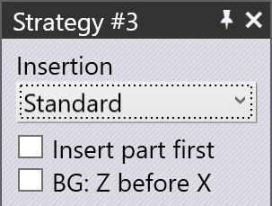
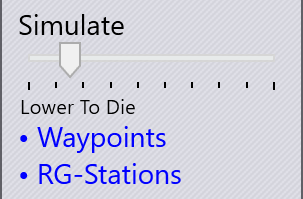
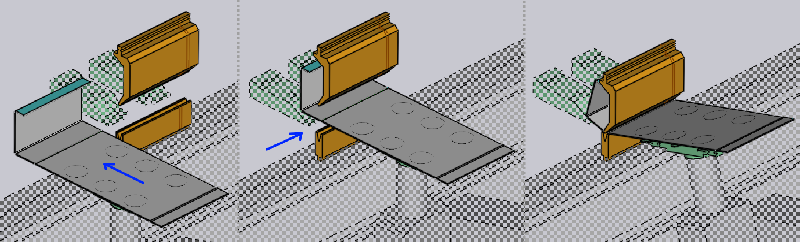
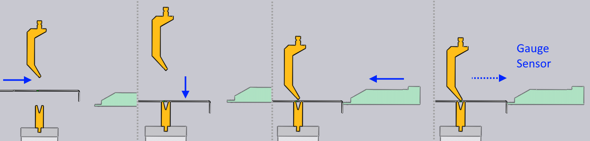

Vkládání

První část panelu Strategie řídí způsob vložení dílu do stroje před upnutím a ohýbáním.
Jakmile provedete některou z níže popsaných změn, simulace se okamžitě aktualizuje a všechny kontroly kolizí se provádějí a aktualizují v reálném čase. Posuvný regulátor Simulate v dolní části panelu lze použít k snadnému pohybu vpřed a vzad simulací cyklu ohýbání, abyste mohli zkontrolovat účinky svých změn.

Posuvný regulátor také zobrazuje aktuální fázi procesu ohýbání. V tomto příkladu se simulace nachází ve fázi Spustit na matrici.
Směr vkládání
Seznam Insertion umožňuje vybrat mezi standardním vložením, kdy je díl vložen zepředu přímo do stroje, nebo strategií, kdy je díl zasunut zleva nebo zprava do stanice s razníkem/maticí.
Pokud má díl již ohnutý profil, který je třeba vložit do stroje, může být obtížné dosáhnout dostatečného otevření lisovacího trámu, aby se díl vešel dovnitř, aniž by došlo ke kolizi s razníkem nebo matricí. I když se v simulaci může otvor jevit jako dostatečný, může dojít ke kolizi, protože v reálném životě se díl prohne, zejména pokud je přesah od bodu uchopení velký.
V takových situacích bude užitečné vložení zleva nebo zprava. Zde je několik obrázků, které ukazují vkládání dílu zleva. Všimněte si, že otvor nosníku v tomto příkladu není dostatečný pro vložení dílu zepředu, a musíme použít jeden z těchto směrů vkládání.

Nejprve vložení dílu
Normální vkládání funguje takto:

-
Doraz je umístěný o několik mm blíže k linii ohybu, než je nutné pro dorážení dílu.
-
Díl se spustí do polohy několik milimetrů před dorazem.
-
Robot tlačí díl zpět proti dorazu až do kontaktu senzorů[1] v dorazu zapojí a oznámí, že je díl správně umístěn. Poté začíná cyklus ohýbání.
Někdy, pokud má díl dolů směřující přírubu, na které musí být dorážení provedeno, je to obtížné – příruba by se srazila s dorazem při spouštění dílu do polohy. V těchto situacích TecZone Bend automaticky použije strategii Insert part first, která vypadá takto:

-
Díl se vloží do stroje, zvedne se tak, aby se dolů visící příruba uvolnila z matrice.
-
Díl se spustí nad matrici, ale je umístěn několik mm zpět od konečné polohy ohýbání.
-
Doraz se posune dopředu, opět o několik mm blíže k linii ohybu, než je nutné pro dorážení dílu.
-
Robot nyní posune díl o několik milimetrů zpět, dokud se nezapojí kontaktní senzory dorazu, a poté dojde k ohýbání.
Tato strategie se automaticky vybírá TecZone Bend podle potřeby, ale tento spínač vám umožňuje přepsat výchozí nastavení.
Strategie pohybu zadního dorazu
Strategie BG: Z before X vytváří bezpečnější dráhu pojíždění zadního dorazu v situacích, kdy je poloha dorážení pro tento ohyb blíže k linii ohybu než poloha dorážení předchozího ohybu. Normálně se dorazy volně přesunou z předchozí polohy dorážení do nové, jakmile dojde ke změně kroku ohybu.
Při zapnutém spínači se dorazy nejprve pohybují ve směru Z, dokud nejsou přímo za konečnými polohami, ve kterých mají být. Poté se posunou vpřed v ose X, aby se dostaly do polohy, a vyhnou se tak potenciální kolizi, která by mohla být způsobena diagonálním pohybem.
Tuto strategii TecZone Bend volí automaticky podle potřeby, ale lze ji zde přepsat.